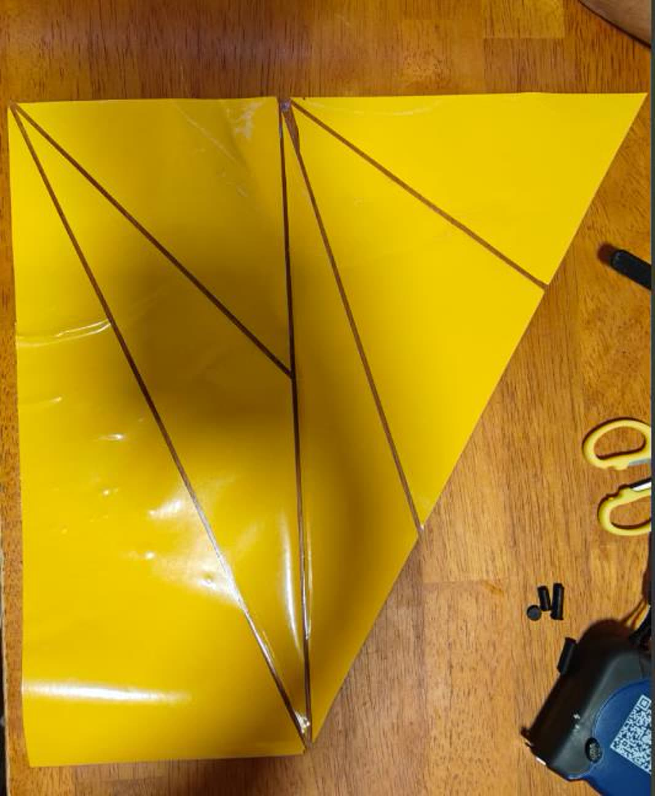
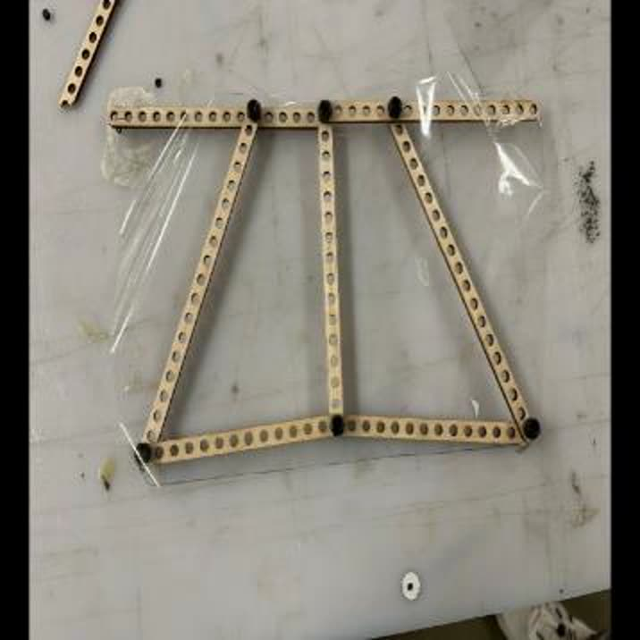
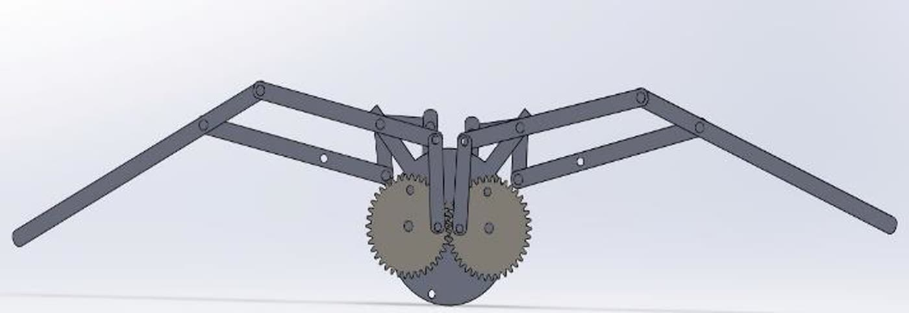
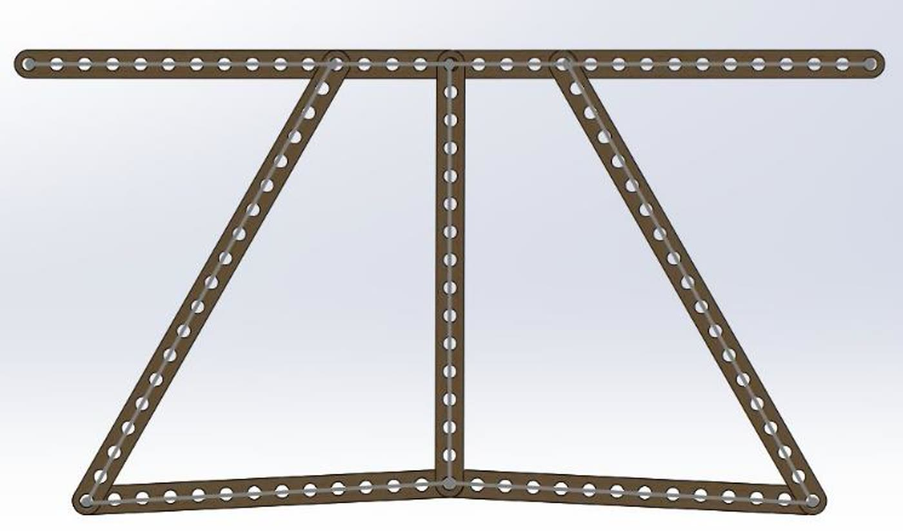
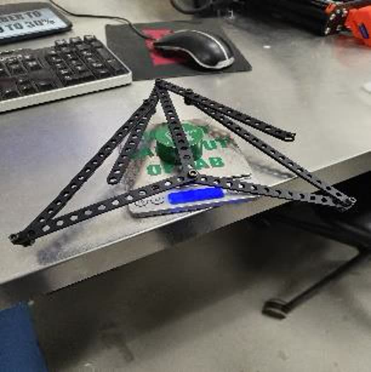
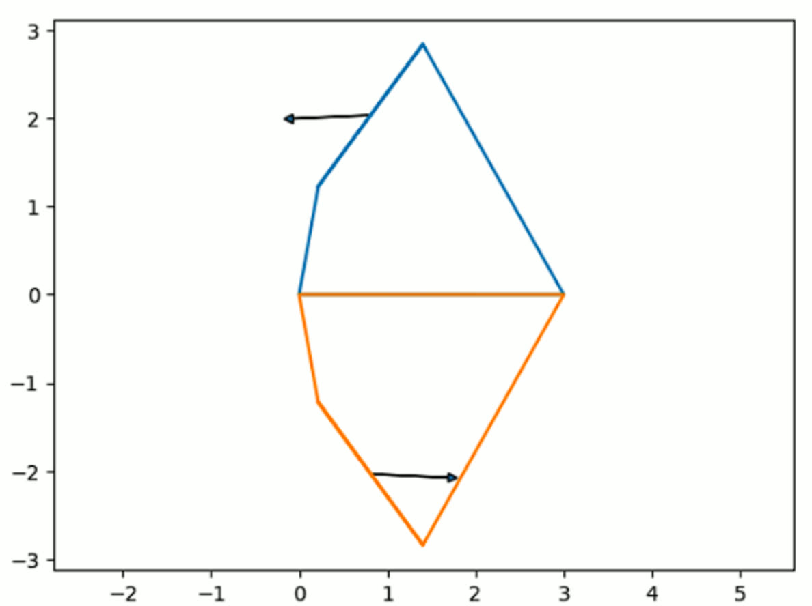
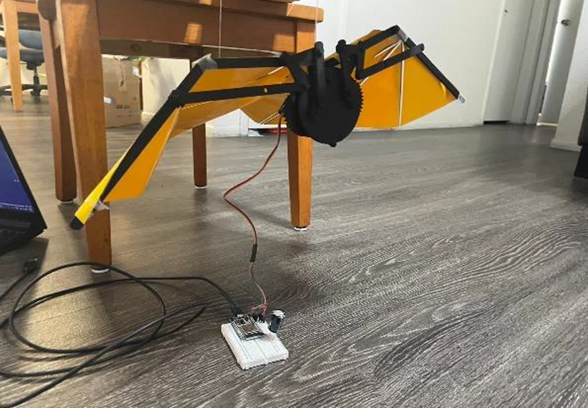

A Robot That Learned to Fly by Copying a Bat, One Fold at a Time
Our team built a flapping robot with folding wings, modeled on Glossophaga soricina, Pallas's long-tongued bat. Each wing is two layers laminated together, a vinyl film bonded to a flexure sheet, and creases shaped like the veins in a bat's wing act as living hinges so the span can fold and change while it flies. One servo sits in the middle between the wings and flaps both of them through a gear train and a four-bar linkage. We went all the way around the loop: measuring the real parts, working out the four-bar kinematics symbolically, simulating it in MuJoCo, and building a prototype that actually flaps.
A bat's wing is really a hand.
A bat flies on a thin membrane stretched across jointed fingers, so it can reshape its wing in the middle of a stroke, folding it, curving it and changing its span in ways a stiff wing never could. That flexibility is why bats can outmaneuver other fliers their size in tight spaces, and it's why they're worth copying for search and rescue or survey drones that have to work indoors and around obstacles.
We started out studying how a wing like that glides and lands: modeling it, predicting trajectories and aerodynamic forces, and comparing configurations. After a review, our professor pushed us toward something harder: add a flapping mechanism and put the force the four-bar linkage was already making to use. That push is what turned our glider into a robot, and it led to two more changes along the way, a stronger frame and a properly laminated wing.
Laminate two layers, crease them, and you get the hinges for free.
The final wing uses the lamination technique from the course exactly as taught. We cut a vinyl film with an adhesive back to the shape of the wing, pressed a flexure material straight onto the sticky side and trimmed off the rest. The flexure layer is cut into vein shapes copied from a real bat wing, and those veins are also the hinges. There are no pins and no bearings. The wing bends where the laminate is flexible and stays stiff where it isn't, and that's what lets the span change during a stroke.
We didn't start there, though. The early prototypes used whatever we had lying around, first wax paper and then kitchen paper against a clear mylar sheet. Mylar won, and the gliding experiment from our parameter identification is what decided it.


One motor, two wings, and a gear mesh that broke our first frame.
A gear-driven four-bar linkage turns the servo's rotation into a flapping stroke. The servo sits on the body between the two wings and flaps both of them, and we chose that for two reasons. It needs half as many actuators, and sitting in the middle keeps the center of gravity on the body instead of pulling it to one side. That matters a lot more for something that has to glide than for something that only has to move.
The frame material taught us the hardest lesson. Our first build was balsa board, and it just couldn't hold a gear mesh. It snapped with barely any actuation and had nowhere near the strength a flapping stroke needs. We switched the final frame to 3D-printed PLA, which was stiff enough to survive the stroke and to carry a printed gear mesh the balsa never could. An ESP32 runs it, powered by cable for the prototype, and batteries on board are left for later.




Measure the parts before you trust the model.
Each of us took charge of one physical parameter, measured it on the real hardware and fit it in Python. Those are the numbers that make a simulation worth anything. Stiffness was mine. I ran six tests, starting with the empty chassis and adding one component at a time until the whole thing was assembled, then fit a power-law model to the force and displacement data so I could pick apart how much each component added to the structure's strength. Compliance came from loading and measuring deflection across the cylinder, servo, batteries and ESP32 breadboard, fit with a straight line. The foam board came out at 0.1578 m/N, clearly bending more than balsa under the same load.
Mass and inertia came from hanging the balsa chassis as a torsional pendulum and timing its swings at several pivot distances, fit with a polynomial in Python and checked against SolidWorks. Gliding compared three setups, plastic parchment, wax paper and a bare frame with no membrane, in free-fall and assisted drops. A 4th-degree polynomial fit to the motion gave the acceleration and velocity, and from those a gliding friction coefficient.
| Parameter | Method | Fit |
|---|---|---|
| Stiffness | 6 load tests, from the empty chassis up to the full system | power law |
| Compliance | digital scale and loaded deflection | linear, foam 0.1578 m/N |
| Mass & inertia | torsional pendulum, varied pivot distance | polynomial vs. SolidWorks |
| Gliding | free-fall and assisted drops, 3 membranes | 4th-degree polynomial |
Solve the loop on paper, then check the Jacobian.
We solved the four-bar properly instead of sketching it. The linkage's closure constraints were written out symbolically, and the valid angles were found by treating it as an optimization that makes the constraint error as small as possible. That meant we could try different link lengths without deriving each design by hand. Jacobian matrices then connect the one joint we drive to all the others, which shows how motion travels through the mechanism, and we plotted the linkage positions with velocity vectors at the important points.
velocity: J q̇ = 0 dependent q̇ from the driven input, at every configuration

Sine waves go in and flapping comes out.
We rebuilt the mechanism in MuJoCo as a tree of rigid bodies written in XML, joined by hinge joints and driven by actuators. A controller we wrote sets the joint positions from sine waves over time, each with its own amplitude and frequency. That's the simplest model of a flapping gait that isn't cheating: one repeating input and a coordinated response through the whole linkage. The simulation renders at 800×600, and we stitched the frames into a GIF to study the kinematics and how the actuators behaved.

It flaps the same way every time, and the model predicted it.
The finished prototype moved its wings consistently, with very little difference from the kinematics we modeled. The gliding and flapping tests showed steady, controlled motion, helped by the stiffness we measured and the weight balance that came out of the center of gravity work. The simulation and the real robot agreed closely, and our report puts that down to feeding real measurements, compliance, mass distribution and joint friction, back into MuJoCo and SolidWorks instead of trusting textbook values. What little gap remained came from things we didn't model: air currents while testing and small flaws in the printed parts.

The full project video.
Our final presentation. It covers the bat that inspired us and what we set out to do, the plan across three builds, why we chose the circuit and actuation we did, and the finished mechanism flapping at the very end.
What I took away from it.
Flexibility can be something you design with, not a flaw. The wing has no hinges because the laminate is the hinge, so choosing where the structure is allowed to bend is the same as designing the joint. Picking a material is really about where the load goes. Balsa didn't fail for being weak in general. It failed because a gear mesh piles force into exactly the spot where a brittle sheet has nothing left to give, and the answer wasn't more balsa, it was a different way of making the part. And a model can only be as good as the measurements behind it. Our simulation and hardware agreed because compliance, inertia and friction went in as measured numbers. You can't see any of that parameter work in the final video, but it's the reason the video works.
To be fair to ourselves and to you, this isn't a true digital twin yet. MuJoCo uses simple boxes instead of the real CAD shapes, so the next step is bringing in the actual model. After that we'd want more power at the wings so the flapping pushes the robot forward instead of just moving the wings, and better fitting methods for the parameter identification.
A team project by Niyati Abhijeet Vaidya, Vivek Sunil Kulkarni, Prajjwal Dutta and Yogesh Pradeep Salvi at Arizona State University. The stiffness parameter identification was my part. Figures are from our final project report.